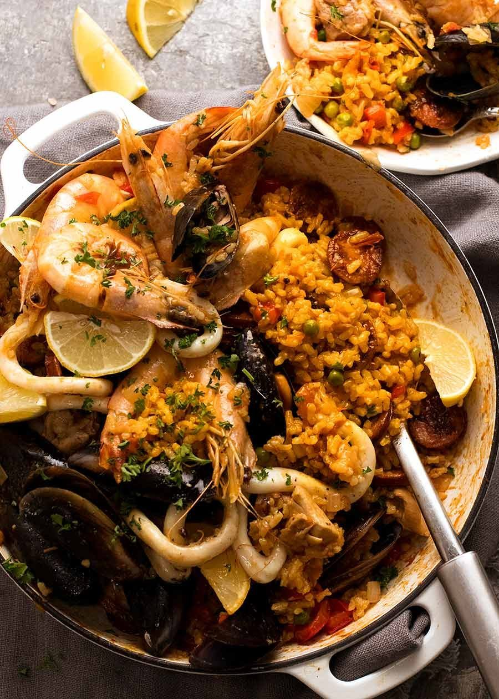
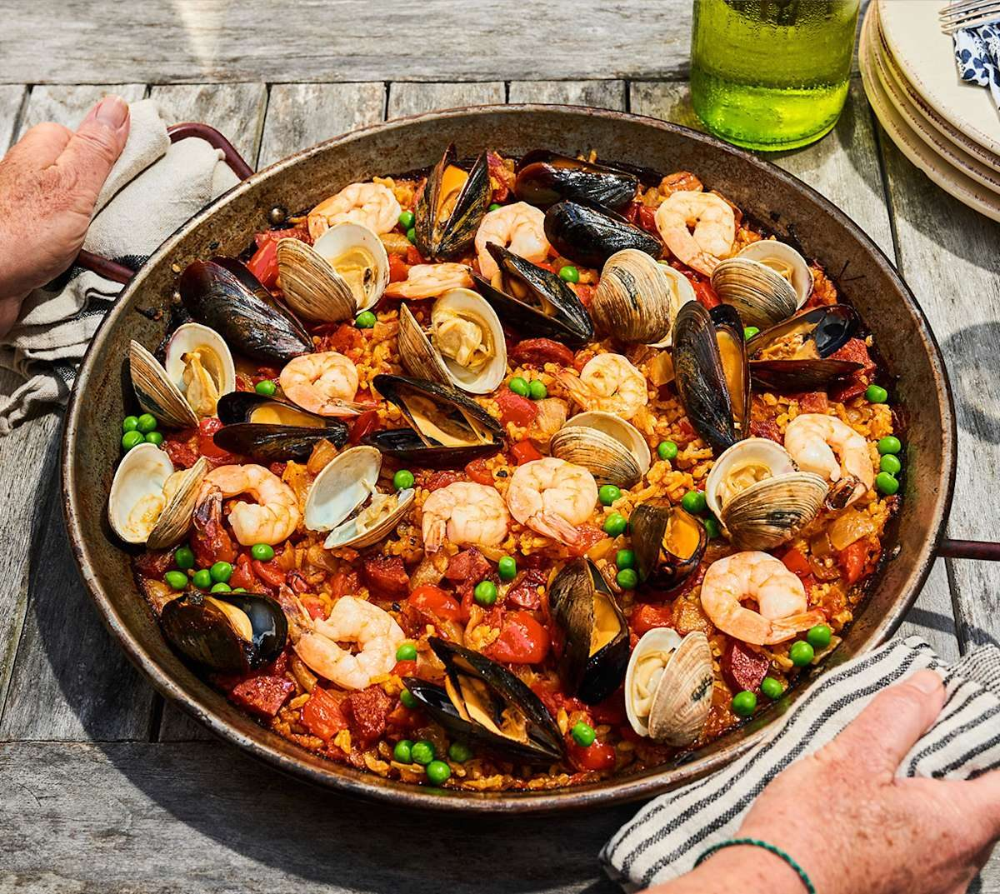
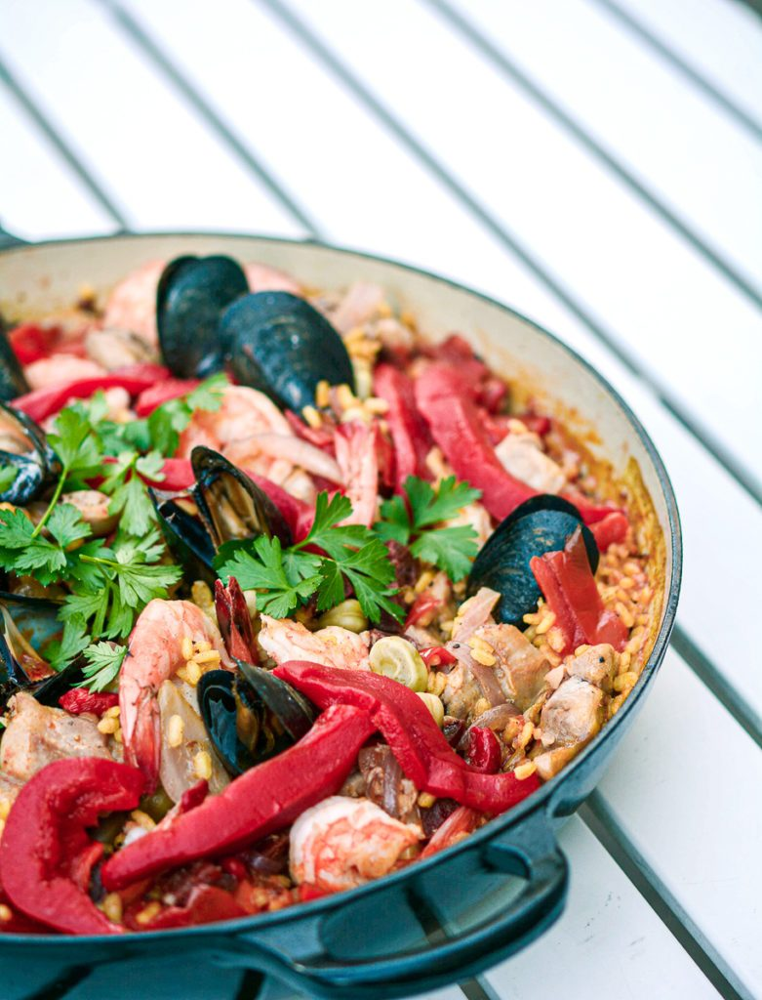
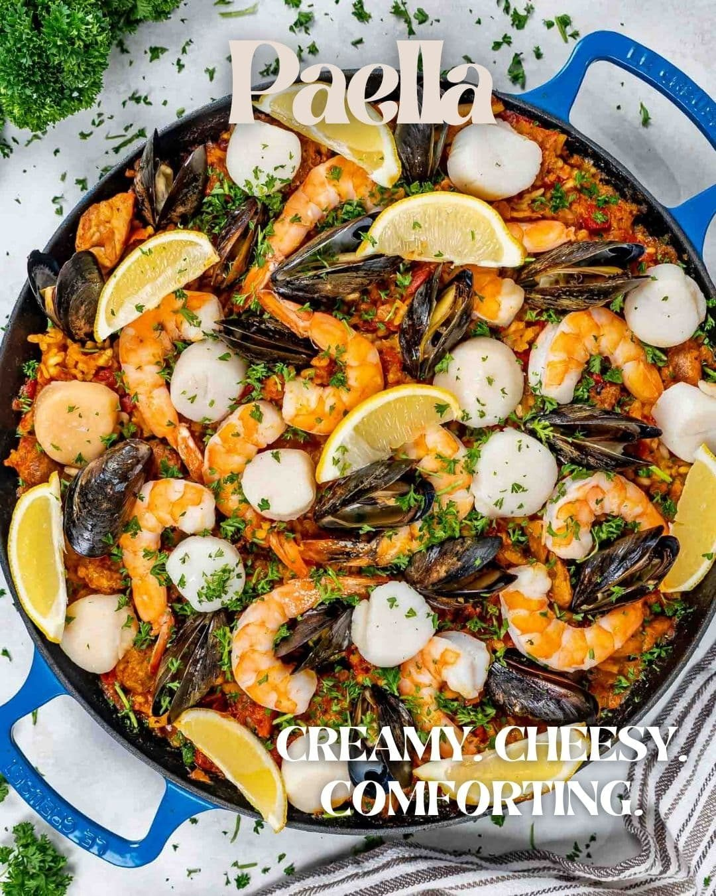
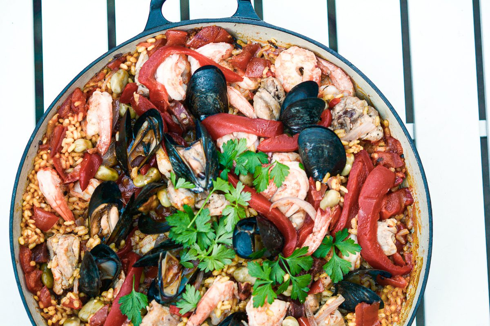
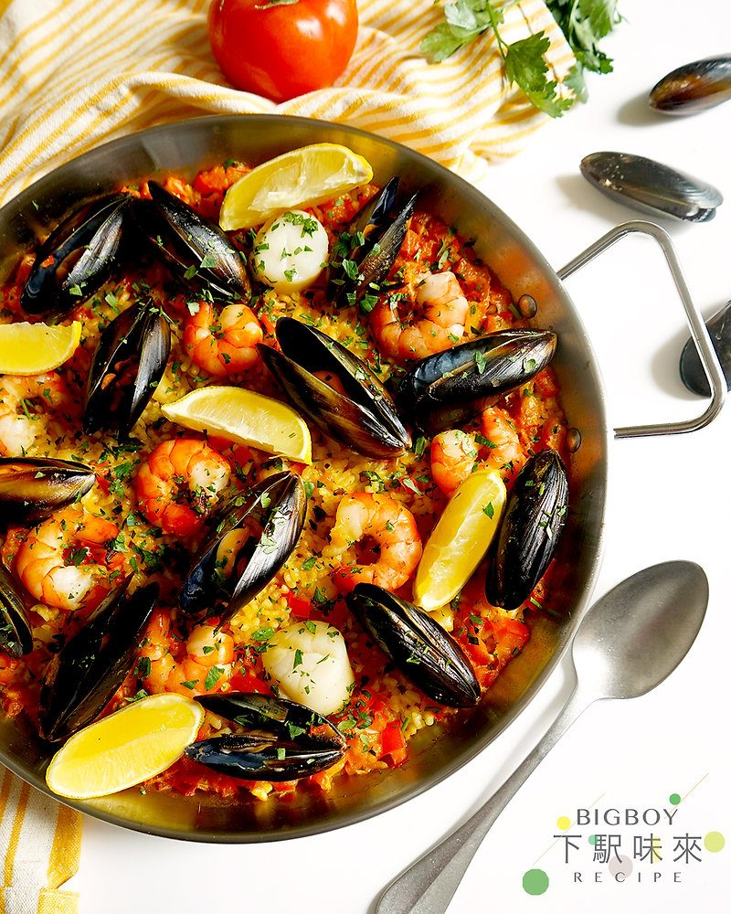
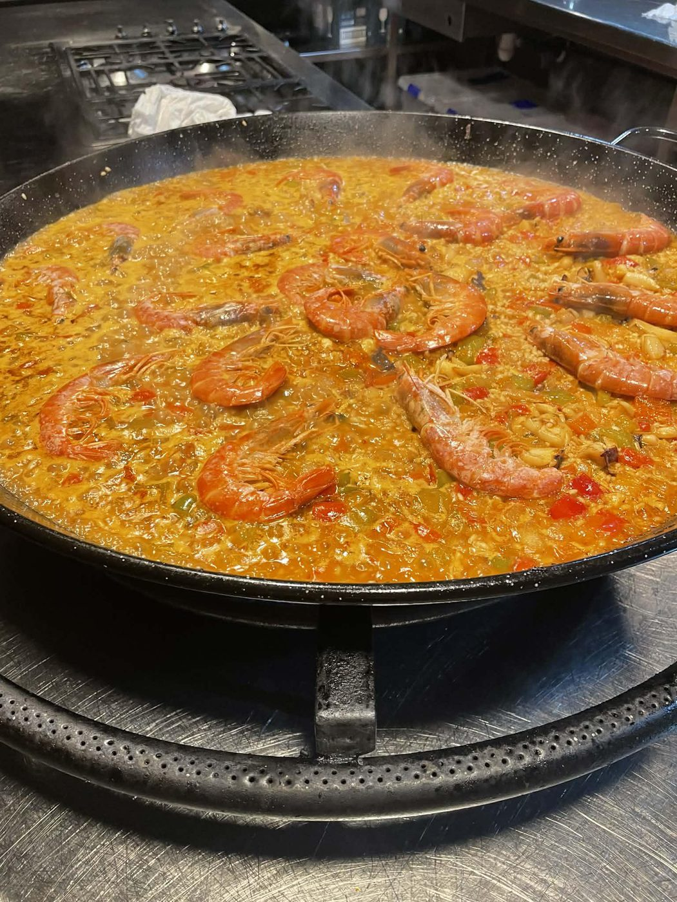

← Mediterranean Sun
Seafood Paella
Rice cooked dry in a wide pan, saffron, and the crackled bottom that Valencians revere by name.
Rice cooked dry in a wide pan, saffron, and the crackled bottom that Valencians revere by name.
Paella is not risotto — it is the opposite. The rice never stirs. Bomba rice sits in a shallow pan over heat, drinks a saffron-flecked seafood stock, and forms a crackled, toasty crust on the pan bottom called the socarrat, which is the texture Valencians fight over. No stirring means each grain stays distinct, dry yet saturated, and the pan does something a pot cannot.
The other key is the sofrito — onion, garlic, tomato cooked down slowly until sweet — plus a stock made from shrimp shells, which most recipes treat as optional and which is honestly half the flavor. A real paella pan is wide and thin carbon steel; a wide stainless skillet is a legitimate stand-in. Do not use a deep pot. Paella in a pot is just wet rice with good memories.
serves 4-6 — tick items off as you shop; it saves as you go
Every tool this recipe leans on — click any tool for its full story. The whole catalog lives on the Tool Wall.
Sauté the shrimp shells in oil 3 minutes, cover with the stock, simmer 15 minutes, strain. This pink liquid is paella's soul — skip it and the rice tastes like plain boiled rice wearing a costume.
Brown calamari in the pan 2 minutes, remove. Sear shrimp 1 minute per side, remove. They finish later; raw-over-rice seafood steams grey and sad.
In the same pan, cook onion 8 minutes until soft and sweet, add garlic, then grated tomato and paprika. Cook 10 minutes until dark and jammy — this base determines everything.
Add rice, stir 1 minute to coat — the only stir of its life. Pour in saffron stock, distribute peas, arrange the seafood on top. From here: no stirring, ever, or the socarrat cannot form.
Boil hard 8 minutes, then medium-low 8-10 more until the liquid is absorbed and the rice just peeks above the surface. Now raise the heat 60-90 seconds — you will hear crackling; that is the socarrat forming. Stop when it smells toasty, not burnt.
Off heat, cover with a clean towel for 5 minutes. Serve the whole pan in the middle of the table with lemon, and claim your socarrat wedge early — it goes fast.







Images are web-sourced via image search and self-hosted. Original sources:
https://z-cdn.chatglm.cn/image-search-mcp/images-ppt/01e3633fe74b.jpghttps://z-cdn.chatglm.cn/image-search-mcp/images-ppt/19e33803d48c.jpghttps://z-cdn.chatglm.cn/image-search-mcp/images-ppt/408e1dcfa4bd.jpghttps://z-cdn.chatglm.cn/image-search-mcp/images-ppt/56ca0701ded4.jpeghttps://z-cdn.chatglm.cn/image-search-mcp/images-ppt/7a5bf3678b00.jpghttps://z-cdn.chatglm.cn/image-search-mcp/images-ppt/f262e2b714e6.jpghttps://z-cdn.chatglm.cn/image-search-mcp/images-ppt/f4cd1a2220f1.jpgVerified working videos — click a card to load the embed.


The dish at a glance — twelve field notes for the collectors.
Powered by GitHub Issues — the backup kitchen. One issue per recipe; your comment lands in the repo.
Two rice schools that share a border: the north stirs starch in; Valencia leaves it alone until it crackles.

If this one works for you, the neighbors probably will too.

Spanish pan logic: shallow, confident, shared from the vessel